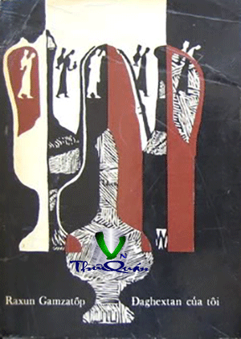

Đúng như vậy, “Đaghextan của tôi” đó là tác phẩm Văn xuôi của một nhà thơ. Nói thế hoàn toàn không có nghĩa đơn giản trước mặt bạn đọc là một thứ văn xuôi có chất thơ. Không. Trong cuối sách đặc biệt này vừa có chỗ giành cho văn xuôi vừa có chỗ giành cho thơ. Đồng thời nó cũng có chỗ dành cho cái giản dị và cái phức tạp, cái hài và cái bi, cái cao cả và cái thường ngày. Raxun Gamzatốp viết tác phẩm văn xuôi của mình như một bản giao hưởng nhiều giọng, nhiều âm thanh của cuộc sống. Trước hết nó như một lời tự thú sáng tác của một nhà nghệ sỹ. Đồng thời nó giống như một cuốn sách với những suy tư triết lý về Cuộc đời, về Số phận, về Nghệ thuật. Và nhiều điều khác nữa. Chính vì vậy mà trong truyện mới tràn đầy những vần thơ đến như thế và xen vào nó còn có cả những truyện vừa, truyện ngụ ngôn giáo huấn, những câu tục ngữ, ngạn ngữ dí dỏm. Nhận thức rõ công trình của mình như một thứ truyện không thể phân chia nó làm hai phần: cuốn thứ nhất và cuốn thứ hai. Lần xuất bản này, trước mặt bạn đọc là “Đaghextan của tôi” cuốn thứ hai. Chúng tôi lưu ý các bạn đến lời đề từ cho cuốn thứ hai này: “ Dân tộc nhỏ cần phải có bè bạn lớn”…Không phải ngẫu nhiên mà những từ ấy báo trước về câu chuyện sẽ tiếp tục. Trong cuốn thứ nhất tác giả giành mối quan tâm lớn nhất cho cá nhân, đôi khi đó chỉ là số phận riêng của mình, là công việc sáng tác: tác giả đã kể về “cậu con trai không ai biết đến của nhà thơ Đaghextan Gamzát rời làng bản, lúc đầu tới Makhátkala sau đó tới Matxcơva” đã trở thành nhà thơ như thế nào: tác giả kể về cha, mẹ mình, về bạn bè và những người cùng làng bản. Cuốn thứ hai nói tới số phận của nhân dân, tới lịch sử dân tộc. Raxun Gamazatốp có suy nghĩ rất hiện đại, và suy nghĩ về những điều quan trọng khi ông hướng tới những trang quá khứ, khi nhắc lại những huyền thoại thơ mộng và làm sống lại những truyền thuyết cổ. Cuốn sách nói về người nghệ sỹ và lao động của anh ta đã trở thành cuốn sách nói về Tổ quốc, về đời sống mới hôm nay của nhân dân. Hơn nữa nó lại rất quan trọng vì khi suy nghĩ đến số phận dân tộc mình, nhà văn – người công dân Raxun Gamazatốp đã nói về sự cần thiết của thái độ và quan hệ hữu nghị của các dân tộc trên trái đất – về quan hệ láng giềng thân thiện về sự tôn trọng lẫn nhau, về sự ủng hộ, giúp đỡ lẫn nhau. Trong công việc nghiêm túc này ông đã giàn vị trí quan trọng cho nghề nghiệp của mình – cho tiếng nói của nhà văn, và cho các cuốn sách của anh ta. Như đã nói, Raxun Gamazatốp đã khẳng định những đánh giá của mình bằng một việc làm. Cuốn sách “Đaghextan của tôi” giới thiệu một cách xứng đáng với bạn đọc nước ngoài nền văn hóa nhiều dân tộc của nhân dân các nước anh em trong Liên bang Xô Viết.
Dân tộc nhỏ cần phải có dao găm lớn
Samin đã nói như vậy vào năm 1841
Dân tộc nhỏ cần phải có bè bạn lớn
Abutalip đã nói như vậy vào năm 1941
Chìa khóa nhỏ có thể mở được chiếc hòm lớn - đôi lúc bố tôi đã nói như vậy. Còn mẹ tôi thì thường kể đủ mọi chuyện cổ tích “ Biển có rộng không? Rất rộng, Vậy nó sinh ra từ đâu? Có một chú chim nhỏ mổ mãi chiếc mỏ còn nhỏ hơn nữa của nó xuống đất - và thế rồi một mạch nước lộ ra. Cả một biển lớn đã dâng đầy lên từ mạch nước ấy”
Mẹ tôi còn hay nói với tôi khi thấy tôi chạy hộc tốc về nhà “Cần phải dừng lại thở một lúc, ít ra là vào lúc chiếc mũ bị bay và rơi xuống đất. Ngồi xuống nghỉ một tý con ạ”
Và mọi người cũng đều biết rằng, nếu sau khi cầy xong một thửa ruộng, dù nhỏ, rồi định cầy tiếp một thửa ruộng khác thì cần phải lên bờ mà nghỉ một lúc.
Khoảng cách giữa hai quyển sách liệu có phải là một thứ bờ ruộng như thế không? Tôi đã nằm lên đó, mọi người đi qua, nhìn tôi và nói: anh thợ cầy này chắc làm nhiều quá rồi, đang ngủ đây.
“Bờ ruộng” của tôi tương tự như thung lũng cách ngăn hai làng bản hoặc giống như làng bản đứng chơi vơi trên sườn núi nổi lên giữa hai thung lũng.
“Bờ ruộng” của tôi là ranh giới giữa Đaghextan và cả thế giới còn lại. Tôi đã nằm trên bờ ruộng ấy, nhưng không ngủ.
Tôi đã nằm yên như con cáo già lông bạc trắng nằm cách không xa đàn gà rừng choai choai đang kiếm ăn. Một mắt rôi hơi nheo lại, còn mắt kia chỉ he hé nhìn ra. Một bên tai tôi úp lên một tay, còn tay kia tôi đặt lên tai còn lại. Bàn tay này thỉnh thoảng tôi khẽ ghếch lên và tôi lắng tai nghe. Liệu quyển thứ nhất của tôi đã đến với mọi người chưa? Họ đã đọc nó chưa? Họ có buồn bàn tán về cuốn đó không? Bàn những gì vậy?
Anh mõ làng ngày xưa đứng trên mái nhà cao gọi loa đọc đủ loại thông báo, chỉ đọc sang tin khác khi biết chắc rằng mọi người đã nghe được tin trước.
Nếu một người vùng núi, khi đi ngoài đường, trông thấy từ ngưỡng cửa của nhà ai đó một vị khách mặt mày ủ ê, cau có giận dữ bước ra, thì chẳng nhẽ người ấy lại còn ghé vào nhà đó sao?
Tôi đã nằm trên khoảng cách giữa hai cuốn sách và thấy mọi người đã tiếp nhận quyển đầu tiên của tôi theo cách khác nhau.
Điều đó cũng dễ hiểu: Có người thích ăn táo, có người thích nhai hạt dẻ. Khi ăn táo người ta gọt vỏ, còn hạt dẻ thì phải cắn vỡ làm đôi. Ăn dưa hấu thì phải bỏ hạt. Cũng vậy, đối với các sách khác nhau cần có cách đánh giá khác nhau. Không thể dùng một con dao nhỏ ở nhà ăn định bổ vỡ đôi hạt dẻ: muốn làm như vậy cần phải dùng đến chiếc chầy gỗ. và không thể dùng chiếc chầy đối với quả táo thơm tho, mềm mại.
Mỗi người khi đọc sách, đều tìm ra trong đố những khiếm khuyết. Làm sao khác được, như người ta nói, đến cả con gái vị giáo sỹ Hồi giáo cũng còn có những nhược điểm này nọ, huống hồ là cuốn sách của tôi!
Tuy thế, giờ giải lao của tôi cũng đã hết, tôi phải bắt tay vào viết tiếp cuốn thứ hai. Tôi cũng không biết viết cuốn sách này cho bao nhiêu độc giả. Số lượng in chẳng nói lên điều gì hết. Có những cuốn sách in ra hàng trăm ngàn cuốn, nhưng chẳng có ai đọc: chúng nằm trên các giá sách của các cửa hàng hay thư viện. Trong trường hợp khác, một bản sách lại truyền tay từ người nọ sang người kia và biết bao nhiêu người đã đọc nó. Tôi chẳng mong rơi vào trường hợp nào cả. Cho dù như chỉ có một người đọc cuốn sách của tôi, thì tôi đã mừng. Tôi muốn kể lại với người đó câu chuyện về đất nước nhỏ bé, bình dị và đầy kiêu hãnh của tôi, Đất nước ấy ở đâu, dân chúng ở đấy nói bằng thứ ngôn ngữ gì, họ nói với nhau những gì, họ ca những bài hát nào.
Tôi không thể kể lại mọi điều. Các bậc cao niên ở miền đất chúng tôi đã dạy rằng: “Chỉ tất cả mọi người mới kể được mọi điều. Còn anh, anh hãy kể về chuyện của mình, rồi sau đó sẽ có tất cả. Mỗi người chỉ xây nhà của mình, nhưng kết quả là xuất hiện cả một làng. Mỗi người chỉ cấy ruộng của mình nhưng kết quả là cả mặt đất này được cày xới”
Và vậy là tôi đã thức dậy rất sớm. Hôm nay là ngày tôi phải cấy luống đầu tiên, Luống cấy mới trên thửa ruộng mới. Vào một ngày như vậy theo phong tục xưa, trên bàn phải có bảy vật bắt đầu bằng cùng một chữ cái. Tôi đưa mắt nhìn khắp mặt bàn tôi và tìm thấy bảy vật đó là:
1. Kaghiát - giấy (trắng nguyên)
2. Karandas - bút chì (gọt nhọn đầu)
3. Kartôtska - tấm ảnh (mẹ tôi)
4. Karta - bản đồ (đất nước tôi)
5. Kôfê - cà phê (đen, đặc)
6. Kô nhắc - rượu cô nhắc (của xứ Đaghextan, năm ngôi sao)
7. “Kazbếch” - thuốc lá
Nếu bây giờ không viết thì lúc nào mới viết?
Bếp lò đã đỏ rực. Chiếc ấm đặt trên đầy đang reo. Ngoài sân mặt trời le lói qua màn mưa lất phất. Người ta nói, vào những ngày như vậy, tất cả thú rừng trên núi đều nhảy múa trên cầu vồng thất sắc, tựa như những nhà làm xiếc trên dây. Vào nhưng ngày thời tiết như vậy, mẹ tôi thường nói rằng bầu trời được đan bằng sợi mua còn kim là những tia nắng.
Hôm nay trên vùng cao là mùa xuân, ngày xuân đầu tiên. Cũng như tôi, mùa xuân đang đi những “đường cày đầu tiên”
- Hỡi mùa xuân Đaghextan, hãy nói cho ta biết, người đã có bảy món quà gì cùng bắt đầu bằng một chữ cái?
- Ta có những món quà như thế - mùa xuân trả lời, - Đaghextan đã dành những quà đó cho ta. Ta sẽ kể tên, còn anh hãy đếm đầu ngón tay mà tính.
1. Txia - lửa. Dành cho cuộc sống. Dành cho tình yêu và lòng căm thù
2. Txiar - tên. Dành cho niềm trung thực, Cho lòng dũng cảm. Cho con người gọi những con người.
3. Txiam - muối. Cho đậm vị cuộc đời, cho đời có mức đo.
4. Txiva - ngôi sao. Cho những khát vọng cao cả và những niềm tin. Cho những mục tiêu xán lạn và dọi đường thẳng cho con người.
5. Txium- chim ưng. Để làm gương, để mọi người bắt chước.
6. Tximur - chuông. Để rung lên báo gọi mọi người họp lại
7. Txiankiu - cái sàng. Để loại bỏ những hạt giống lép ra khỏi những hạt mẩy, lành lặn.
Hỡi Đaghextan! Bảy món quà đó là bảy cành vươn ra trên tấm thân vững chãi của người. Hãy ban phát tất cả cho những đưa con của mình, hãy tặng cả cho tôi. Tôi muốn được làm ngọn lửa và hạt muối, làm chim ưng và ngôi sao, làm chuông rung và cái sàng. Tôi muốn có cái tên tốt lành.
Tôi ngước nhìn lên cao và trông thấy bầu trời dệt bằng làn mưa và tia nắng, bằng lửa và nước. Mẹ tôi vẫn thường kể lại rằng chính Đaghextan cũng đã hiện ra trong khi ngủ, từ lửa và nước.